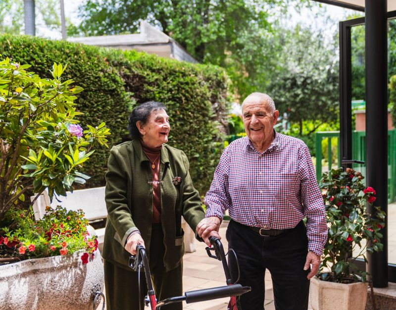
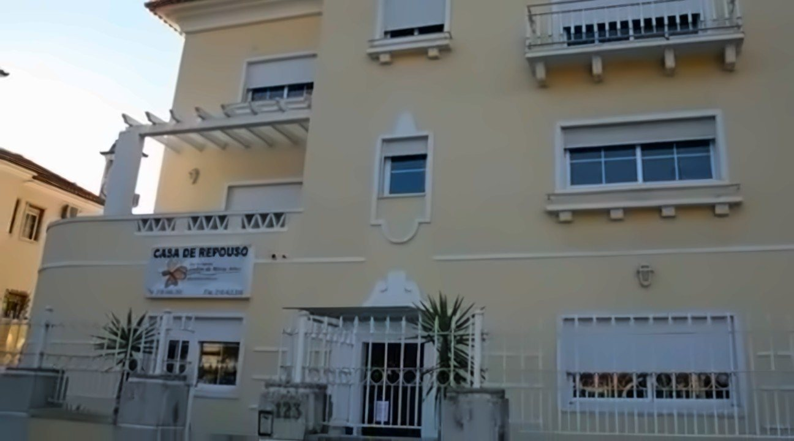

Uma vivenda da Avenida Gago Coutinho, com jardim e 34 lugares.
Casa de repouso em Alvalade, com licença da Segurança Social desde 2015. Recebe pessoas autónomas, dependentes e acamadas, em estadia permanente ou temporária.

Em Lisboa, sem sair do bairro.
A casa fica no n.º 123 da Avenida Almirante Gago Coutinho, numa fila de moradias de Alvalade. Quem viveu sempre em Lisboa continua perto do que conhece, e a família chega de autocarro, de metro ou de carro, com lugar para estacionar.
São 34 lugares, em quartos individuais, quartos duplos e suites duplas, alguns com casa de banho privada. Há elevador, jardim, terraço e estacionamento.
A casa por dentro
O vídeo de apresentação da casa passa pela entrada, pela sala de refeições, pelos quartos e pelo terraço, em menos de um minuto.

O vídeo abre a partir do YouTube, que só é contactado depois do clique.
Quem cuida, e quando
- EnfermagemDe segunda a sexta-feira, de manhã, cerca de quatro horas por dia.
- MédicoClínica geral, uma vez por semana.
- Terapia ocupacionalCom a terapeuta da casa.
- AnimaçãoAtividades, manutenção física, estimulação cognitiva, passeios e visitas culturais.
- AlimentaçãoCozinha própria, com ementas feitas por nutricionista.
Visitas a qualquer hora.
E lugar para o carro.
A casa não fixa horário de visitas. Filhos, netos e amigos aparecem quando podem, antes do trabalho ou ao fim do dia, e estacionam à porta.
★★★★★«A equipa foi atenciosa, profissional e dedicada.»
Manuel Correia, familiar de um residente, no Google
★★★★★«Muito humanismo encontrado num só sítio.»
Hortêncio Alvima, no Google
O que fica perto
Distâncias a partir da porta da casa. O Hospital de Santa Maria e o centro de saúde de Alvalade ficam a cerca de dez minutos de carro.
- N.º 123Av. Almirante Gago Coutinho
- 100 mParagem de autocarro
- 500 mEstação de comboio
- 900 mMetro
- Menos de 3 kmAeroporto Humberto Delgado
Perguntas de quem está a escolher
Há horário de visitas?
Não. As visitas não têm restrição de horário e a casa tem estacionamento, o que em Alvalade faz diferença.
Aceitam estadias temporárias?
Sim. O alojamento pode ser permanente ou temporário, por exemplo durante uma convalescença ou nas férias de quem cuida.
Recebem pessoas acamadas ou com demência?
Sim. A casa recebe pessoas autónomas, dependentes, muito dependentes e acamadas, incluindo com Alzheimer, Parkinson e outras demências. Cada situação é avaliada antes da admissão.
O que está incluído na mensalidade?
Alojamento, alimentação e hidratação com confeção própria, higiene e apresentação, apoio nas atividades do dia, tratamento de roupa e animação. Cabeleireiro, barbeiro, lavandaria, acompanhamento e transporte são opcionais.
Quanto custa?
A mensalidade depende do quarto e é indicada pela casa, por telefone ou na visita.
Venha ver a casa
Deixe o nome e o telefone. A casa liga de volta para combinar o dia da visita e responder às primeiras dúvidas.
- Telefone218 446 293
- Emailjardimarialice@gmail.com
- MoradaAv. Almirante Gago Coutinho, 123
1700-029 Lisboa